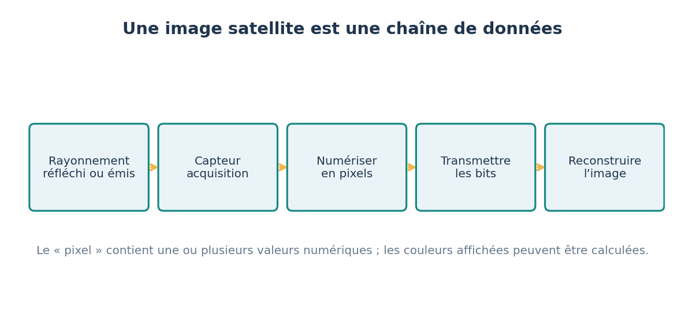

5′
1. Je m’interroge
La carte micro:bit possède plusieurs capteurs intégrés.
Comment une grandeur physique devient-elle un nombre dans la carte ?
Je vais identifier la grandeur mesurée par différents capteurs et la suivre jusqu’à la donnée numérique.
Objectif : Je vais identifier la grandeur mesurée par différents capteurs et la suivre jusqu’à la donnée numérique.
Je réussis si : Pour chaque capteur testé, je nomme la grandeur, l’unité ou l’échelle de la donnée, et je dis s’il est actif ou passif.
La carte micro:bit possède plusieurs capteurs intégrés.
Comment une grandeur physique devient-elle un nombre dans la carte ?
Pour chaque capteur, affiche la valeur sur l’écran de la carte et fais varier la grandeur mesurée.
| Capteur | Grandeur mesurée | Donnée obtenue | Actif ou passif |
|---|---|---|---|
| Capteur de lumière (écran LED) | éclairement | nombre de 0 à 255 (relatif) | passif |
| Capteur de température | température du processeur | nombre en °C | passif |
| Accéléromètre | accélération | nombre en milli-g | passif |
| Capteur ultrason (module externe) | distance | nombre en cm | actif : il émet un son et mesure l’écho |
La chaîne d’information a trois fonctions : acquérir (les capteurs), traiter (le microcontrôleur et son programme), communiquer (écran, radio, câble). Un capteur passif reçoit un signal venu de l’extérieur ; un capteur actif émet un signal et mesure ce qui revient, comme un radar ou un capteur à ultrasons.

Écris un programme qui affiche la luminosité quand on appuie sur A et la température quand on appuie sur B.
Ce que je dois produire : Programme testé et tableau grandeur – capteur – fonction.
Matériel : Carte micro:bit, câble USB, ordinateur avec MakeCode.
input.lightLevel() donne la luminosité ; input.temperature() la température.
| Essai | Ce que je teste | Résultat (avec l’unité) | Décision |
|---|---|---|---|
| 1 | |||
| 2 | |||
| 3 |
J’écoute, j’explique mes choix et j’accepte de changer d’avis quand les preuves l’exigent.
Le professeur affiche la correction avec son code. Sur un site statique, ce code masque la correction mais ne la protège pas.
Objectif : Identifier les constituants de la chaîne d’information et les associer à leur fonction (acquérir).
Programme : Repère de 4e : « Identifier les constituants de la chaîne d’information d’un objet réel et les associer à leur fonction ».
Déroulé : S’interroger 5 min ; Enquêter 20 min ; Retenir 8 min ; Agir 17 min ; Bilan 5 min.
input.lightLevel() et input.temperature() = acquérir ; la condition sur le bouton = traiter ; basic.showNumber() = communiquer.
Point de vigilance : Le capteur de température de la micro:bit mesure la température du processeur, pas exactement celle de l’air.